Before You Visit
Traveling to China can require a little more preparation than visiting many other countries. From navigating internet restrictions and setting up mobile payments to understanding local transportation systems, there are several things worth arranging before departure. Having the right apps installed, payment methods configured, and travel arrangements prepared in advance can make your experience considerably smoother. The following guide covers some essential information, practical tips, and recommendations to help you navigate the country with confidence.
01. Visas and Entry Requirements
Before traveling to China, it is important to check the entry requirements applicable to your nationality. Depending on your passport, you may qualify for visa-free entry under China's current exemption policies, while other travelers may need to obtain a visa before departure. Visa-free arrangements can differ in terms of permitted length of stay, eligible travel purposes, and entry conditions, so be sure to verify the latest requirements through official Chinese government or embassy websites. If you are required to obtain a visa, allow sufficient time for the application process and ensure that your passport meets the necessary validity requirements. It is also advisable to keep copies of your accommodation reservations, return or onward travel details, and other relevant travel documents readily accessible when entering the country.
02. Internet & Connectivity
Staying connected in China requires a little planning, as internet access works differently from many other countries. Although hotels, airports, restaurants, and cafés commonly provide Wi-Fi, connecting to a local Chinese network generally means that certain international services and websites, including Google, YouTube, Instagram, and WhatsApp, may be inaccessible. One convenient alternative is to use an international travel eSIM or an overseas roaming plan. These services route your connection through an international network, which can allow access to many websites and applications that would otherwise be restricted on local networks. This is an important distinction, as using an international eSIM is not necessarily the same as connecting to local Wi-Fi, even when both provide internet access. Before departure, consider purchasing and installing an eSIM, checking device compatibility, and downloading essential apps and offline resources. Having a reliable internet connection will make it much easier to navigate unfamiliar cities, communicate, access travel information, and manage bookings throughout your trip.
03. Navigation & Maps
Navigating around China can be quite different from what you may be accustomed to in other countries, as popular international mapping services do not always work reliably. Google Maps is generally not a dependable option in mainland China due to restricted access, outdated map information, and location inaccuracies. Apple Maps is a more practical alternative for iPhone users, offering useful directions, business listings, and public transportation information in many major Chinese cities. However, for more detailed local navigation, Amap (高德地图), one of China's most widely used mapping applications, is particularly useful for finding restaurants, attractions, transit routes, and nearby businesses. Amap also provides detailed driving, walking, and public transportation directions, although much of its interface is in Chinese. It is worth downloading and familiarizing yourself with Amap before your trip, as well as saving important destinations and their Chinese names or addresses. Having a reliable navigation app will make getting around unfamiliar cities considerably easier.
04. Payments & Currency
Mobile payments are the primary method of payment throughout much of urban China, with Alipay and WeChat Pay being the two most widely used platforms. From restaurants and shopping malls to convenience stores and street vendors, QR code payments are accepted almost everywhere. For international visitors, both platforms support linking eligible overseas bank cards, including Visa and Mastercard, allowing you to make payments without opening a local Chinese bank account. It is highly recommended to download both applications and complete the registration and card-linking process before departure. While Alipay is particularly convenient for everyday purchases and transportation, WeChat Pay is also widely accepted and useful for communicating and accessing local services. Although cash is used less frequently, carrying a small amount of Chinese yuan (RMB) is still advisable as a backup, particularly in situations where mobile payments are unavailable or a transaction cannot be processed. Preparing your payment methods in advance will make everyday purchases and transactions considerably more convenient.
05. Transportation & Reservations
Planning transportation and making reservations in China is relatively convenient once you become familiar with the available apps and services. Trip.com is particularly useful for international visitors, offering an English-language platform for booking hotels, domestic flights, high-speed train tickets, tours, activities, and attraction admissions. It is worth booking popular attractions and transportation in advance, as some destinations require advance reservations, passport information, or timed entry tickets. For getting around cities, public transportation is generally affordable, efficient, and well developed. Major cities have extensive metro and bus networks, making them convenient options for exploring different neighborhoods and attractions. For shorter journeys or destinations that are less accessible by public transportation, DiDi, China's equivalent of Uber, provides a convenient ride-hailing service. The DiDi service can be accessed through its standalone application or through the Alipay and WeChat mini-programs. Having these apps ready before arrival will make arranging transportation, securing reservations, and exploring the country much easier.
Essential Apps
These apps can make traveling around China considerably easier. Download and set them up before your trip whenever possible.


Beijing
In the city, daily life can unfold at a remarkable pace. Morning markets fill with fresh produce, commuters weave through stations, and small restaurants prepare for the lunch crowd. Take time to notice the quieter moments too: a park waking up, a family sharing tea, or a neighborhood shop opening its doors. These observations can help turn a list of sights into a story about the place and the people who live there.
Mutianyu Great Wall
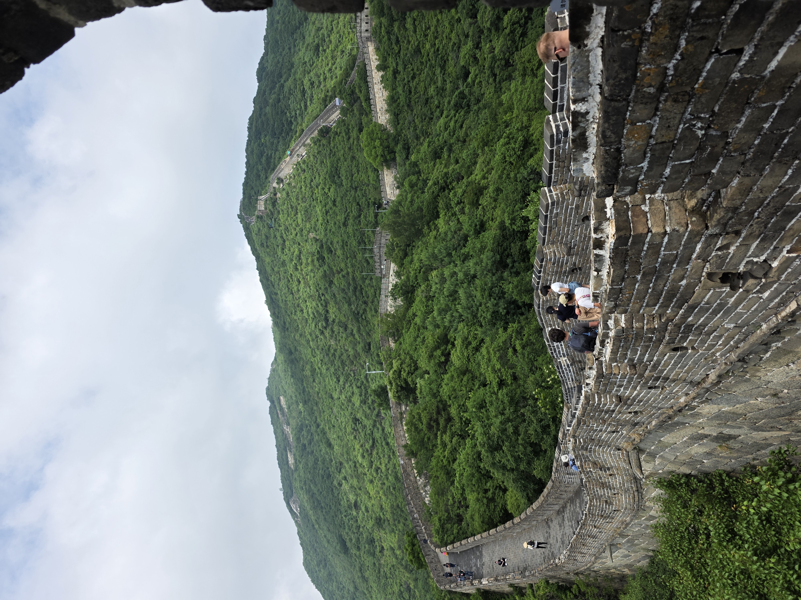
Mutianyu offers a scenic section of the Great Wall surrounded by wooded hills. Allow time for the journey from central Beijing and for walking the wall; check current access, ticketing, and transport information before setting out.
Forbidden City

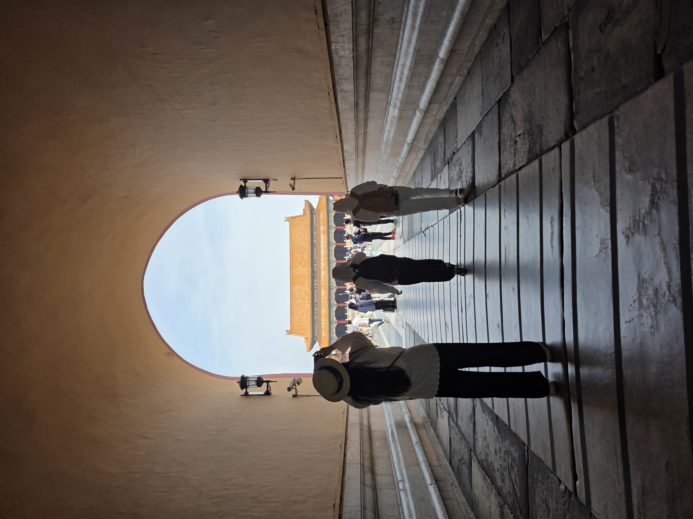
At the heart of Beijing, the Forbidden City’s courtyards, halls, and gates reflect centuries of imperial history. Its scale makes advance planning useful: check reservation requirements and opening hours, and leave several hours to explore.
Temple of Heaven
The Temple of Heaven complex is known for its distinctive ceremonial architecture and landscaped grounds. Visit respectfully, and consider arriving earlier in the day to see the park in use as well as the historic buildings.
Wangfujing
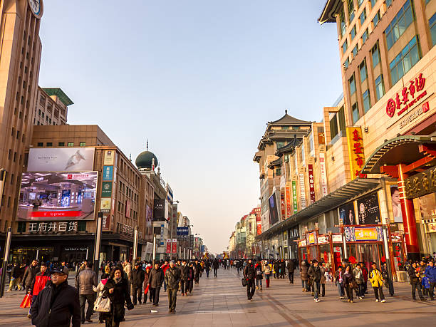
Wangfujing is a busy central shopping area with department stores, restaurants, and places to sample local snacks. Explore at your own pace and check current opening times, as individual shops and food venues may vary.
Hutongs
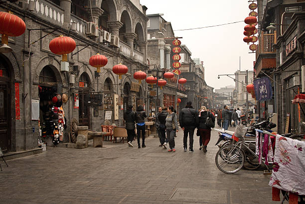
Beijing’s hutongs are traditional neighborhood lanes lined with courtyard homes and everyday local businesses. Walk quietly, respect residents’ privacy, and consider a guided visit to learn more about the area’s history and community life.
Shanghai
Shanghai blends historic waterfront architecture, lively shopping streets, and striking modern landmarks. Explore these varied sights at your own pace, and check current opening hours and transit information before setting out.
Nanjing Road Pedestrian Street
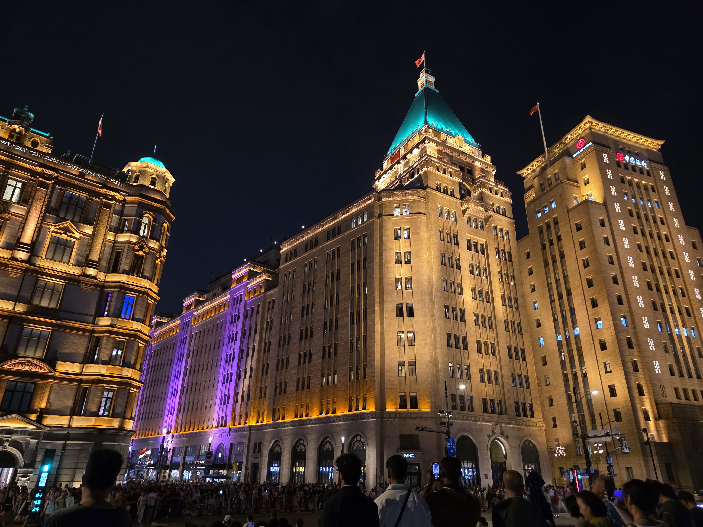
This bustling shopping street is lined with department stores, restaurants, and local businesses. Visit in the evening to see the signs and storefronts illuminated, and expect crowds in this popular area.
The Bund
The Bund’s historic waterfront promenade offers views across the Huangpu River toward Pudong’s modern skyline. Take time to walk along the river and appreciate the contrasting architecture; visibility can vary with the weather.
Bailian ZX Chuangquchang
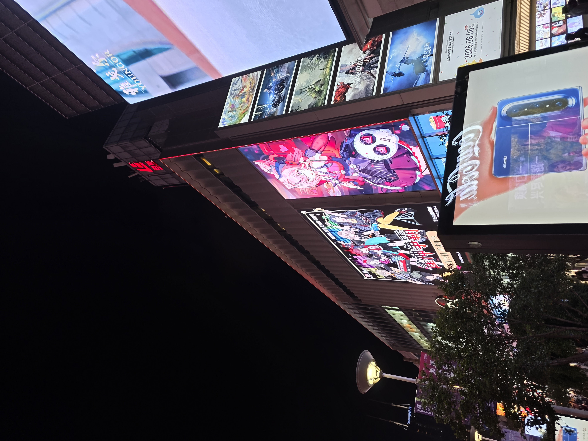
Located on Nanjing Road, Bailian ZX Chuangquchang is a multi-level shopping destination focused on anime, comics, games, and related pop culture. Browse its themed shops and displays, and check current listings and opening hours before visiting.
Jing'an Temple
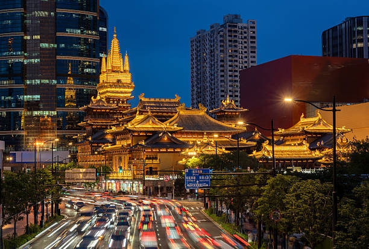
Jing'an Temple is a Buddhist temple and architectural landmark in the heart of the city. Visitors can admire its ornate halls and central courtyard; dress respectfully and follow any guidance for visitors.
Oriental Pearl Tower
This distinctive Pudong landmark has observation areas with views over Shanghai. Check ticket availability and access details in advance, and consider choosing a clear day for the best chance of seeing across the city.
Yu Garden
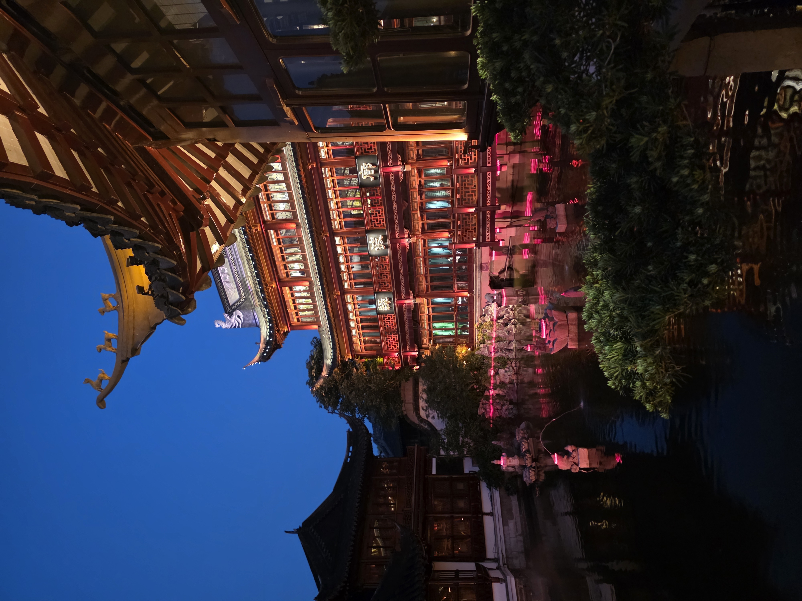
Yu Garden is a classical Chinese garden in Shanghai’s Old City, known for its rockeries, ponds, pavilions, and winding paths. Allow time to explore the garden and nearby bazaar, and check current opening hours and entry details before visiting.
Datong
Datong’s history can be explored through its Buddhist art, historic defenses, and remarkable temples. Allow time to travel between the sites, and check current access and opening information before your visit.
Yungang Grottoes
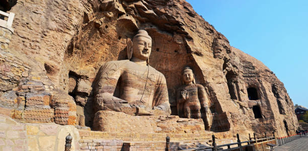
The Yungang Grottoes are a UNESCO-listed complex of Buddhist cave temples, renowned for their carved statues and reliefs. Give yourself time to explore the caves and learn about their history, while following site rules and respecting the artworks.
Datong Ancient City Walls
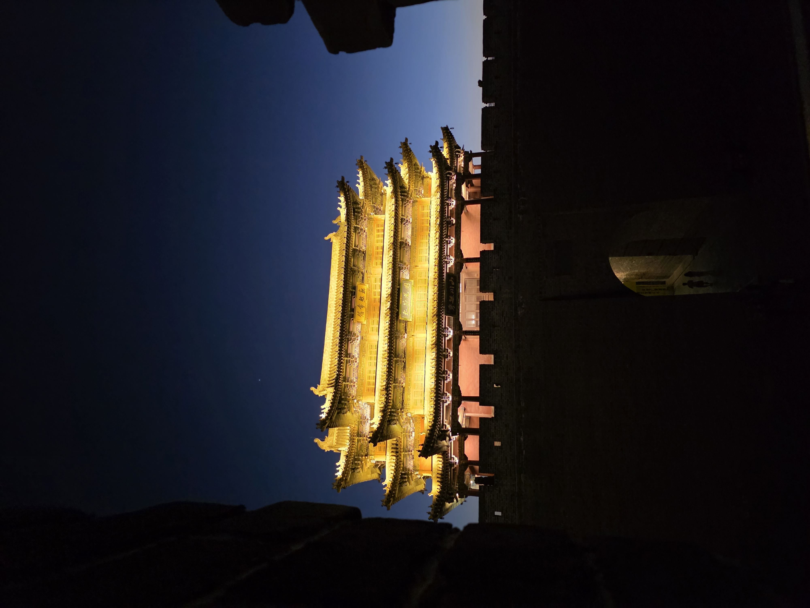
Datong’s restored city walls offer a way to appreciate the city’s historic layout and broad views over its rooftops. Check which sections are open and whether walking or cycling access is available during your visit.
Hanging Temple
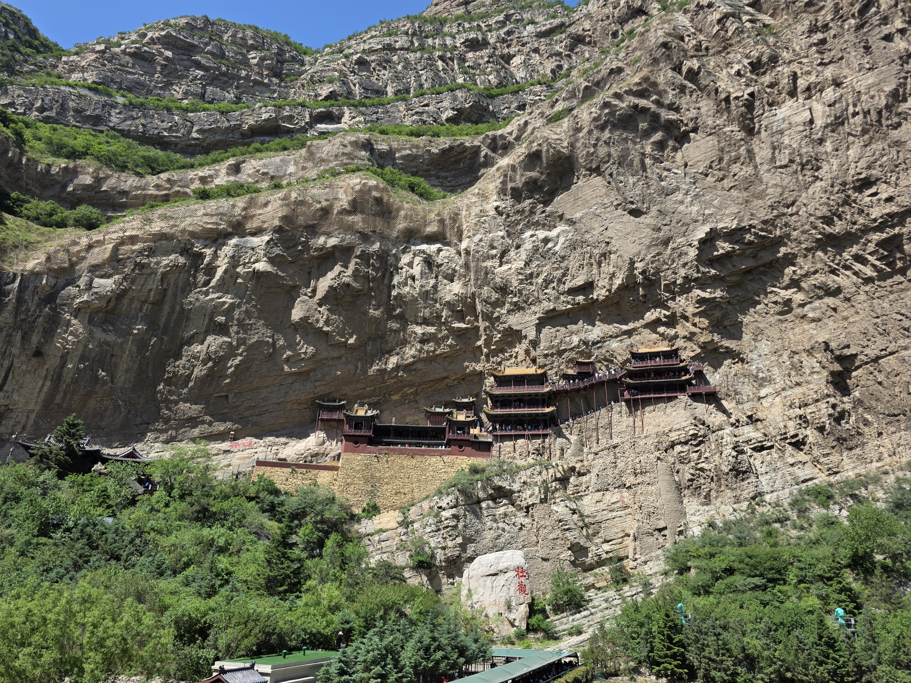
Built into a cliff near Mount Heng, the Hanging Temple is known for its striking setting and combination of Buddhist, Taoist, and Confucian traditions. The journey takes visitors beyond the city, so plan transport in advance and check current visitor access.
Suzhou
Suzhou is known for its classical gardens, historic canals, and traditional neighborhoods. Set aside time to explore at a relaxed pace, and check current opening hours and entry details before visiting.
Humble Administrator’s Garden
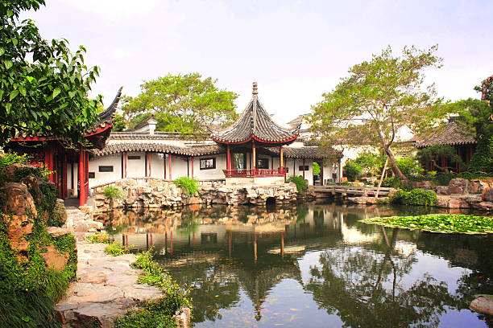
This renowned classical garden features ponds, pavilions, and carefully arranged landscapes. It can be busy, especially during peak travel periods, so check visitor information and allow time to explore.
Lingering Garden
Lingering Garden is celebrated for its varied garden spaces, rockeries, and architectural details. Take time to notice how the paths and framed views connect, and check current access before your visit.
Pingjiang Road
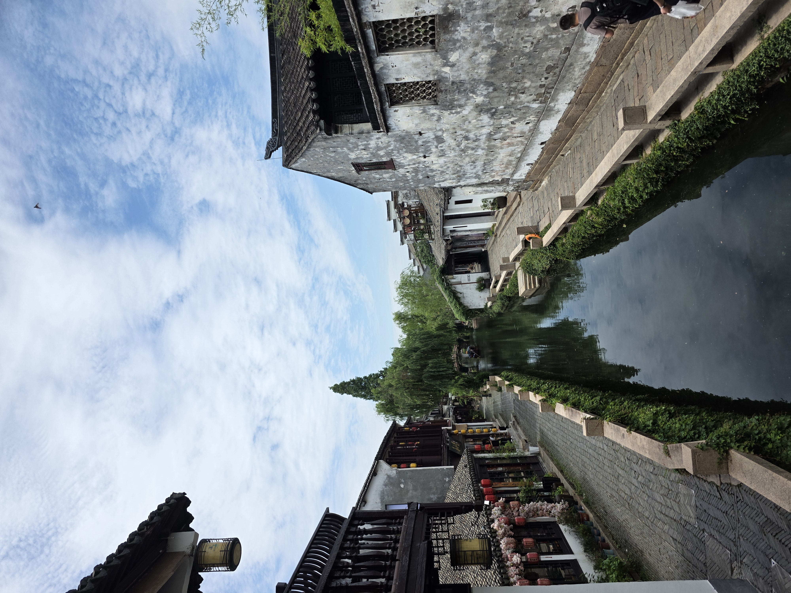
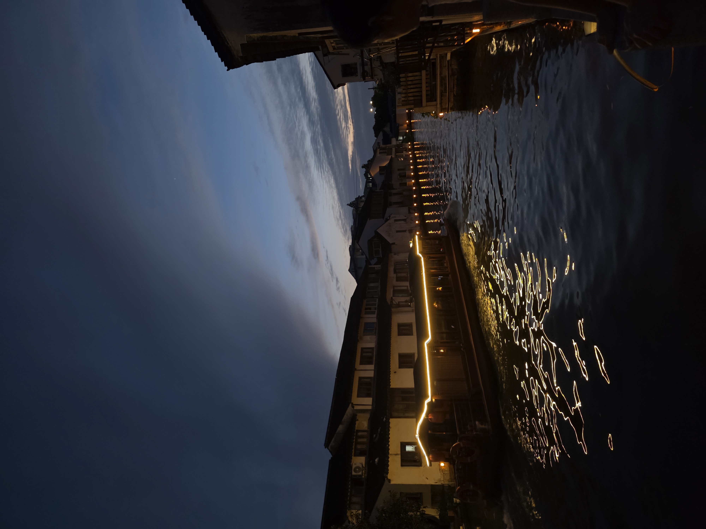
This historic canal-side street offers a glimpse of Suzhou’s waterside neighborhoods, with small shops and places to eat along the way. Be considerate in busy lanes and respect residents’ privacy.
Hangzhou
Hangzhou pairs scenic West Lake with forested hills, Buddhist temples, historic streets, and a lively modern tea culture. A full day allows time for a lakeside walk or boat ride, but staying longer makes it easier to explore the surrounding areas at an unhurried pace.
West Lake
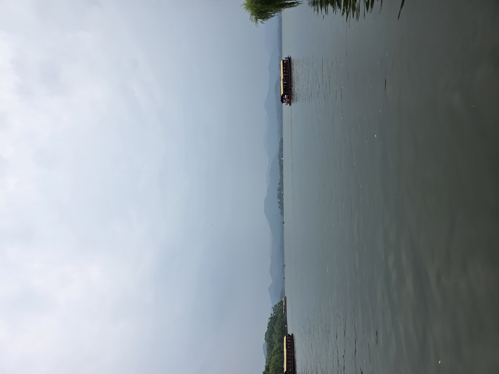
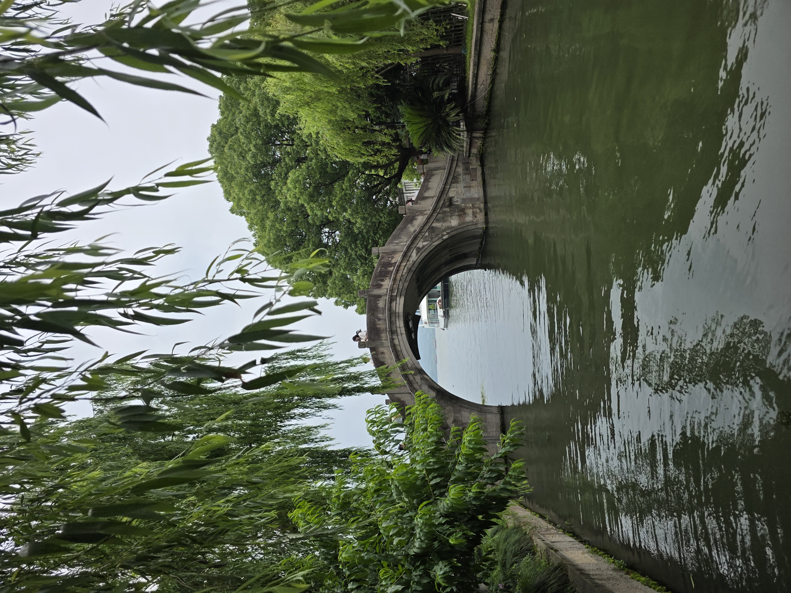
West Lake is the heart of Hangzhou, framed by gardens, causeways, pagodas, and willow-lined paths. Walk along a lakeside section, rent a bicycle, or take a boat to see the scenery from the water. The lake is especially atmospheric at dawn or in the evening, and opening-free public areas can be visited year-round.
Lingyin Temple
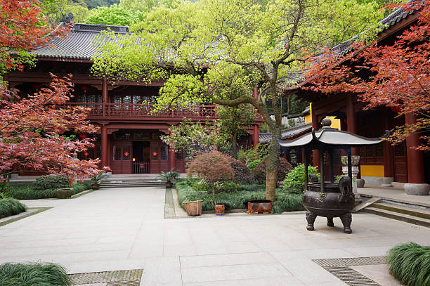
Set beneath wooded hills west of the city, Lingyin Temple is one of Hangzhou’s most famous Buddhist temples. Plan time for the temple halls and the nearby Feilai Feng grottoes, where Buddhist carvings are set among the rocks. Dress respectfully and check current ticket and opening requirements before arriving.
Leifeng Pagoda
Leifeng Pagoda overlooks West Lake and is closely associated with the local legend of the White Snake. A rebuilt tower and viewing platform offer broad views across the lake and surrounding hills. Combine a visit with the nearby gardens or arrange a lake cruise for sunset.
Hefang Street
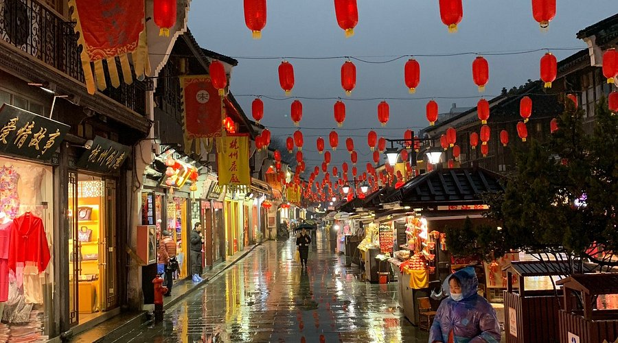
Hefang Street is a lively historic shopping lane lined with local snacks, souvenirs, traditional shops, and tea houses. It is best visited with time to browse and eat rather than simply as a quick stop. Be mindful of crowds on weekends and preserve a little room for tasting regional specialties such as Hangzhou-style noodles and pastries.
Longjing Tea Fields
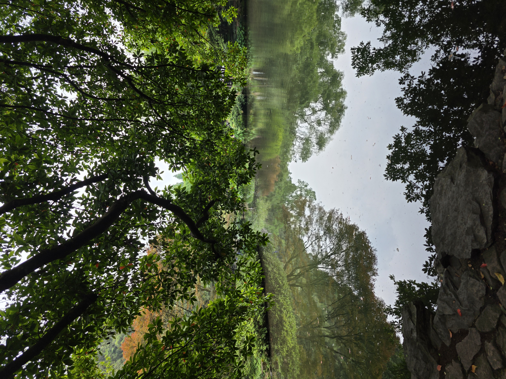
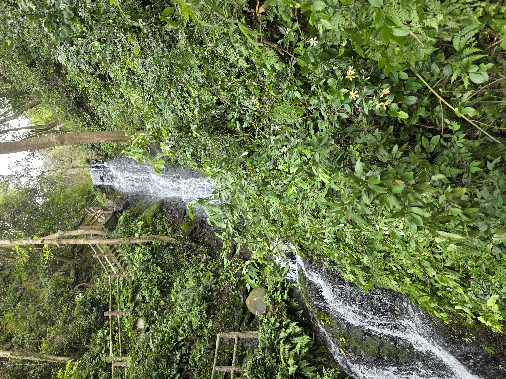
The hills around Longjing village are known for green tea and rural scenery close to central Hangzhou. Visit a tea farm or tea house to learn how the leaves are grown and prepared, and leave time to walk along the surrounding lanes and plantations. Spring harvest season is popular, so expect more visitors and book ahead if needed.